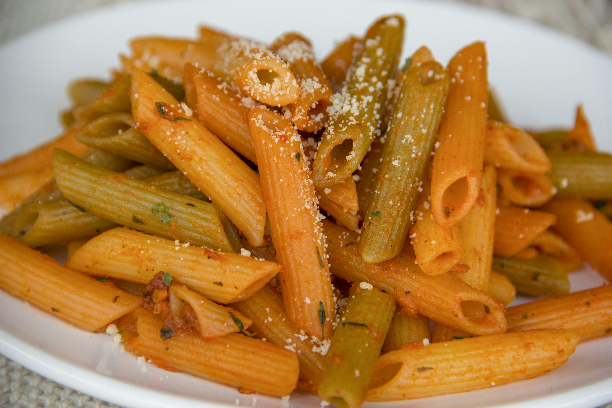

Home
Penne Arrabbiata

Description
Penne Arrabbiata is a classic Italian pasta dish that translates to "angry pasta" because of its spicy kick. This
simple yet flavorful recipe features penne pasta tossed in a zesty tomato sauce with garlic, red chili flakes,
and fresh herbs.
Ready in just 25 minutes, this dish is perfect for a quick weeknight dinner. The combination of tangy tomatoes
and fiery chili creates a bold flavor that pasta lovers will adore.
Ingredients
- 400g penne pasta
- 4 tablespoons extra virgin olive oil
- 4 cloves garlic, minced
- 1-2 teaspoons red chili flakes (adjust to taste)
- 800g canned crushed tomatoes
- 1 teaspoon salt
- 1/2 teaspoon black pepper
- 1 teaspoon sugar (optional, to balance acidity)
- Fresh basil leaves, torn
- Fresh parsley, chopped
- Grated Parmesan cheese for serving
Steps
- Bring a large pot of salted water to a boil for the pasta.
- Add the penne pasta and cook according to package directions until al dente.
- While the pasta cooks, heat olive oil in a large skillet over medium heat.
- Add the minced garlic and red chili flakes. Sauté for about 1 minute until fragrant, being careful not to
burn the garlic.
- Pour in the crushed tomatoes and stir well to combine.
- Add salt, black pepper, and sugar if using. Stir to mix.
- Bring the sauce to a simmer and cook for 10-12 minutes, stirring occasionally, until the sauce thickens
slightly.
- Taste and adjust seasoning, adding more chili flakes if you want it spicier.
- Reserve 1/2 cup of pasta cooking water before draining the penne.
- Drain the pasta and add it directly to the sauce in the skillet.
- Toss the pasta with the sauce, adding a splash of pasta water if needed to help the sauce coat the pasta.
- Remove from heat and stir in fresh basil and parsley.
- Serve hot with grated Parmesan cheese on top.
Home